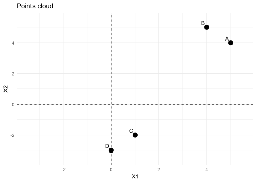
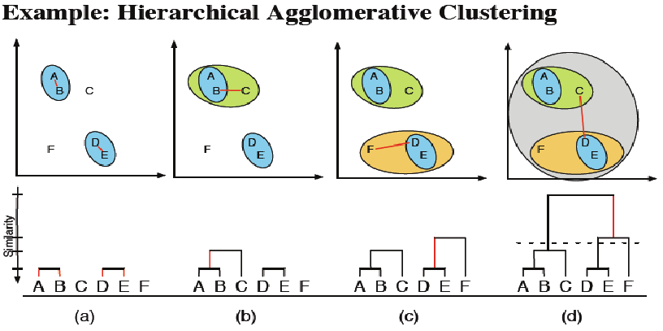
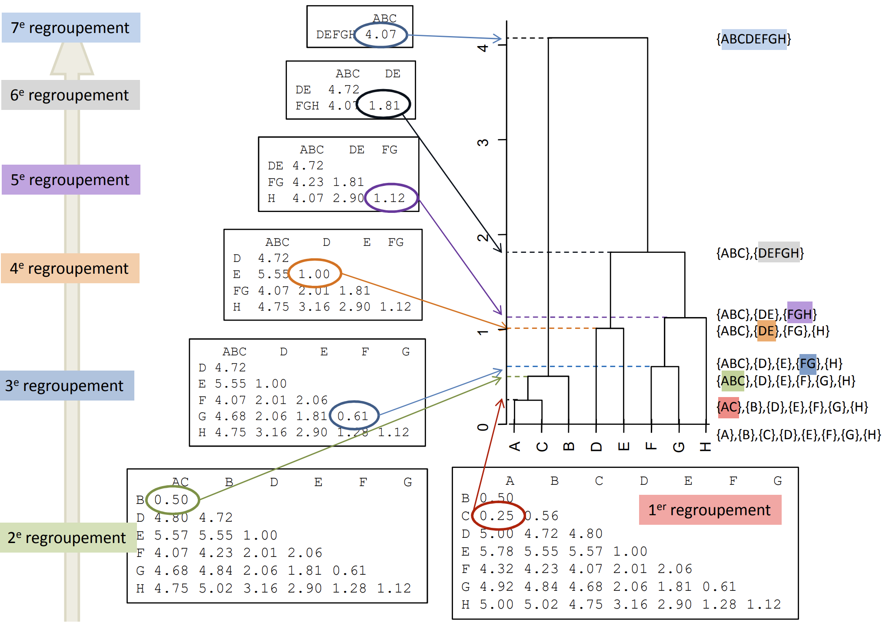
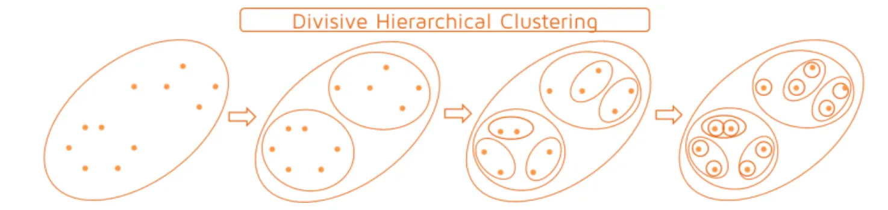
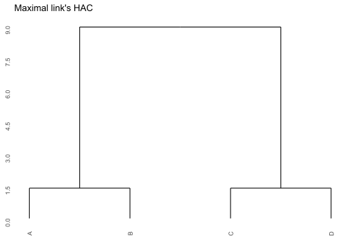
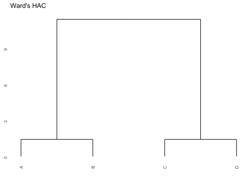
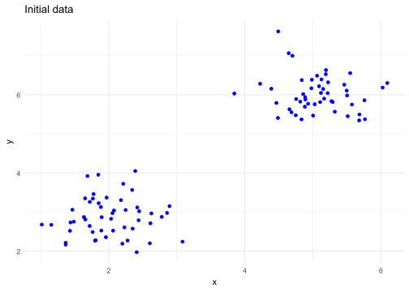
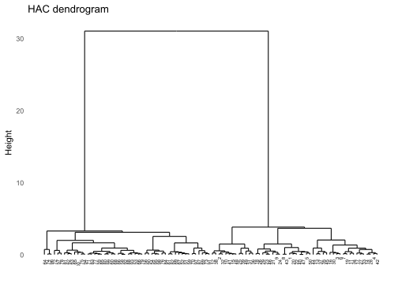
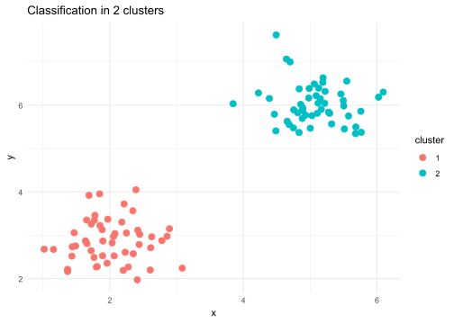

6 Hierachical ascending classification
6.1 Principle
6.1.1 First strategy: Agglomerative Hierarchical Clustering
Start from the bottom of the dendrogram (singletons),
Add the closest parts two by two until you get a single class


Where to cut the dendogram?
Rule of thumb
- Selection of a cut when there is a significant jump in the index by visual inspection of the tree. This jump reflects the sudden passage from a certain homogeneity of classes to much less homogeneous classes.
6.1.2 Second strategy: Divide the hierarchical clustering
Start from the top of the dendrogram (one unique class),
Successive divisions until you get classes reduced to singlets.

6.2 Weaknesses and strengths
Advantages
Simple considerations of distances and similarities
No assumption on the number of classes
Can correspond to significant taxonomies
Disadvantages
Choice of the dendogram cutoff.
The partition obtained at a step depends on that of the previous step.
Once a decision is made to combine classes, it cannot be undone.
Too slow for large datasets.
6.3 Practical
6.3.1 Example 1
We consider the following data table where 4 individuals (here points) A,B,C and D are described on two variables (X1 and X2):
| X1 | X2 | |
|---|---|---|
| A | 5 | 4 |
| B | 4 | 5 |
| C | 1 | -2 |
| D | 0 | -3 |
6.3.1.1 Construct the dendrogram using maximal link
\(\mathcal{P}^{\{0\}} = \{\{A\},\{B\},\{C\},\{D\}\}\)
- Step 1:
\(d(A,B)\) = 1.4142136
\(d(A,C)\) = 7.2111026
\(d(A,D)\) = 8.6023253
\(d(B,C)\) = 7.6157731
\(d(B,D)\) = 8.9442719
\(d(C,D)\) = 1.4142136
| A | B | C | D | |
|---|---|---|---|---|
| A | 0 | |||
| B | 1.4142136 | 0 | ||
| C | 7.2111026 | 7.6157731 | 0 | |
| D | 8.6023253 | 8.9442719 | 1.4142136 | 0 |
=> \(\mathcal{P}^{\{1\}} = \{\{A,B\},\{C\},\{D\}\}\)
We can choose: minimal link, maximum link, average link, or Ward’s link. In this case, I selected maximum link:
\[\begin{align} D(C_k,C_{k'}) = \max_{x \in C_k ,\: x' \in C_{k'}} d(x,x') \end{align}\]- Step 2:
\(D(\{A,B\},\{C\}) \\\)
= \(max(d(A,C),d(B,C))\)
= \(max(7.21,7.61) = {\bf 7.61}\)
\(D(\{A,B\},\{D\}) \\\)
= \(max(d(A,D),d(B,D))\)
= \(max(8.6,8.9) = {\bf 8.9}\)
\(D(\{C\},\{D\}) = d(C,D) = 1.41\)
\(D(\{A\},\{B\}) = d(A,B) = 1.41\)
=> \(\mathcal{P}^{\{2\}} = \{\{A,B\},\{C,D\}\}\)
- Step 3:
\(D(\{A,B\},\{C,D\})\)
= \(max(d(A,C),d(A,D),d(B,C),d(B,D))\)
= 8.9
=> \(\mathcal{P}^{\{3\}} = \{A,B,C,D\}\)
Code
d <- stats::dist(X) # compute the Euclidean distances between points
treeC <- hclust(d, method="complete")
treeC$height[1] 1.414214 1.414214 8.944272Code
ggdendrogram(treeC, rotate = FALSE, size = 2)+
scale_y_continuous(breaks = seq(0,10.5,by=1.5))+
labs(title = "Maximal link's HAC")
Code
cutree(treeC, k=2 )A B C D
1 1 2 2 6.3.1.2 Construct the dendrogram by Ward’s link
- Step 1:
\(d(A,B)\) = 1.4142136
\(d(A,C)\) = 7.2111026
\(d(A,D)\) = 8.6023253
\(d(B,C)\) = 7.6157731
\(d(B,D)\) = 8.9442719
\(d(C,D)\) = 1.4142136
| A | B | C | D | |
|---|---|---|---|---|
| A | 0 | |||
| B | 1.4142136 | 0 | ||
| C | 7.2111026 | 7.6157731 | 0 | |
| D | 8.6023253 | 8.9442719 | 1.4142136 | 0 |
=> \(\mathcal{P}^{\{1\}} = \{\{A,B\},\{C,D\}\}\)
- Step 2:
Ward’s link:
\[ D(C_k,C_{k'}) = \frac {|C_k||C_{k'}|}{|C_k|+|C_{k'}|}d(\mu_k,\mu_{k'})^2 \]
\[\begin{cases} \mu_1 = \frac{A+B}{2} = (4.5,4.5)\\ \mu_2 = \frac{C+D}{2} = (0.5,-2.5) \end{cases}\] \[\begin{align} D(C_k,C_{k'}) &= \frac {|C_k||C_{k'}|}{|C_k|+|C_{k'}|}d(\mu_k,\mu_{k'})^2 \\ &= \frac{2 \times 2}{2+2}d(\mu_k,\mu_{k'})^2 \\ &= (4.5-0.5)^2 + ((4.5+2.5)^2) \\ &= 4^2 + 7^2 \\ &= 65 \end{align}\]Code
treeW <- hclust(d, method="ward.D2")
treeW$height[1] 1.414214 1.414214 11.401754Code
ggdendrogram(treeW, rotate = FALSE, size = 2)+
labs(title = "Ward's HAC")
6.3.2 Example 2
library(ggplot2)
library(cluster)
library(dendextend)
library(factoextra)
library(ggdendro)Step 1: Data preparation
set.seed(123)
data <- data.frame(
x = c(rnorm(50, mean = 2, sd = 0.5), rnorm(50, mean = 5, sd = 0.5)),
y = c(rnorm(50, mean = 3, sd = 0.5), rnorm(50, mean = 6, sd = 0.5))
)
ggplot(data, aes(x = x, y = y)) +
geom_point(color = 'blue') +
theme_minimal() +
ggtitle("Initial data")
Step 2: HAC
Computation of the distance matrix
distance_matrix <- dist(data, method = "euclidean")Hierarchical ascending classification
cah <- hclust(distance_matrix, method = "ward.D2")
# Conversion into format ggplot2
dendro_data <- ggdendro::dendro_data(cah)
# Extraction of the labels of the leaves
label_data <- dendro_data$labels
# Display of the basic dendogram with ggplot2
ggplot() +
geom_segment(data = dendro_data$segments, aes(x = x, y = y, xend = xend, yend = yend)) +
geom_text(data = label_data, aes(x = x, y = y, label = label),
hjust = 2, angle = 90, size = 2) +
labs(title = "HAC dendrogram", x = "", y = "Height") +
theme_minimal() +
theme(axis.text.x = element_blank(), axis.ticks.x = element_blank(), panel.grid = element_blank())
Step 3: Visualization of the results with ggplot2
# Cutting in clusters
k <- 2 # Number of desired clusters
clusters <- cutree(cah, k = k)
data$cluster <- as.factor(clusters)
# clusters visualization
ggplot(data, aes(x = x, y = y, color = cluster)) +
geom_point(size = 3) +
theme_minimal() +
ggtitle(paste("Classification in", k, "clusters"))